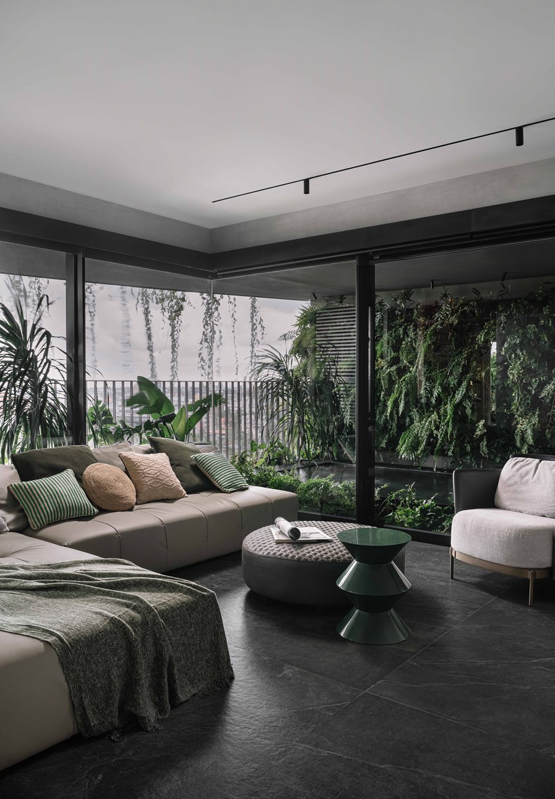
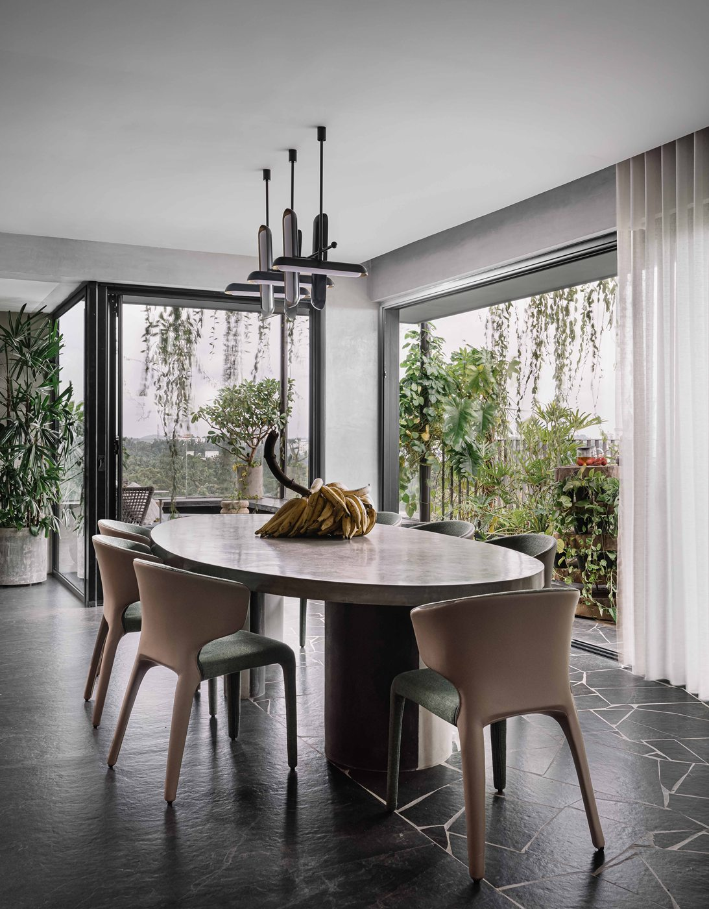
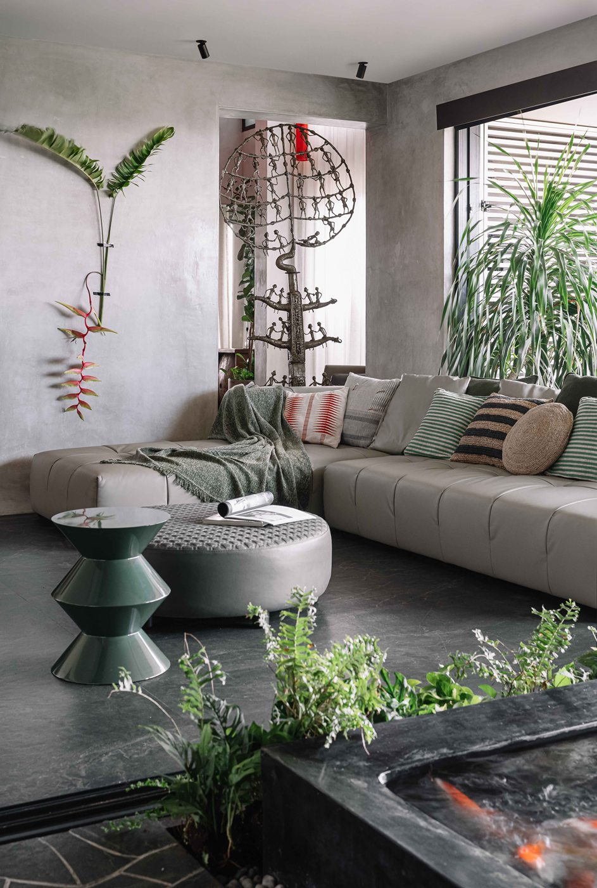

Gardensin the Sky



Gardens in the Sky is a 3,500-square-foot residential duplex in Calicut, Kerala, designed as a fluid, vertically connected space centered around openness and a constant relationship with nature. The lower level forms the social core with interconnected living, dining, and kitchen areas, while the upper level houses private bedrooms linked by a bridge. Key architectural highlights include a striking, sculptural red staircase that functions as the spatial spine of the home, a quiet prayer nook with custom metalwork, and lush peripheral gardens lining the balconies, creating the lived experience of a green sanctuary suspended above the city.